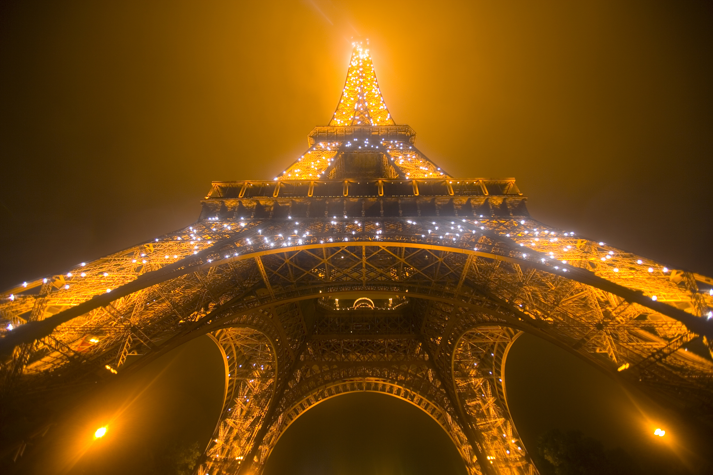

The Eiffel Tower, one of the most iconic landmarks in the world, stands tall in the heart of Paris, France. Built in 1889 by Gustave Eiffel for the World's Fair, this iron structure has captivated millions of visitors with its grandeur and engineering brilliance. Towering at 330 meters (1,083 feet), the Eiffel Tower offers breathtaking views of the city and remains a global symbol of romance and architectural innovation.
he Eiffel Tower, one of the most iconic landmarks in the world, stands tall in the heart of Paris, France. Built in 1889 by Gustave Eiffel for the World's Fair, this iron structure has captivated millions of visitors with its grandeur and engineering brilliance. Towering at 330 meters (1,083 feet), the Eiffel Tower offers breathtaking views of the city and remains a global symbol of romance and architectural innovation.
The Eiffel Tower offers three levels open to the public, each providing unique experiences. The first level features a glass floor and exhibition spaces, while the second level boasts some of the best dining experiences with stunning views. The summit, the highest accessible point, provides a panoramic view of Paris, allowing visitors to take in famous landmarks such as the Seine River, Notre Dame Cathedral, and the Louvre Museum.
Architecture
The Eiffel Tower’s unique iron lattice structure consists of 18,038 metal parts held together by over 2.5 million rivets. Despite its massive size, it was designed with precision to withstand wind and weather conditions, making it a masterpiece of 19th-century engineering
- First Floor – Features glass flooring, a cultural exhibit, and restaurants.
- Second Floor – Offers panoramic views and fine dining at the Michelin-starred Le Jules Verne restaurant.
- Summit – The highest accessible point, providing a stunning 360-degree view of Paris.
- At night, the Eiffel Tower is illuminated by 20,000 twinkling lights, creating a mesmerizing spectacle visible from miles away.